Barcode objects allow you to generate barcodes independently of the rendering support. After generation, you can retrieve the barcode as an array of drawing instructions that you can provide to a renderer.
Objects have a large number of options. Most of them are common to all objects. These options can be set in four ways:
As an array or a
Zend_Configobject passed to the constructor.As an array passed to the
setOptions()method.As a
Zend_Configobject passed to thesetConfig()method.Via individual setters for each configuration type.
Example 16.7. Different ways to parameterize a barcode object
$options = array('text' => 'ZEND-FRAMEWORK', 'barHeight' => 40);
// Case 1: constructor
$barcode = new Zend_Barcode_Object_Code39($options);
// Case 2: setOptions()
$barcode = new Zend_Barcode_Object_Code39();
$barcode->setOptions($options);
// Case 3: setConfig()
$config = new Zend_Config($options);
$barcode = new Zend_Barcode_Object_Code39();
$barcode->setConfig($config);
// Case 4: individual setters
$barcode = new Zend_Barcode_Object_Code39();
$barcode->setText('ZEND-FRAMEWORK')
->setBarHeight(40);
In the following list, the values have no units; we will use the term "unit." For example, the default value of the "thin bar" is "1 unit". The real units depend on the rendering support (see the renderers documentation for more information). Setters are each named by uppercasing the initial letter of the option and prefixing the name with "set" (e.g. "barHeight" becomes "setBarHeight"). All options have a corresponding getter prefixed with "get" (e.g. "getBarHeight"). Available options are:
Table 16.1. Common Options
| Option | Data Type | Default Value | Description |
|---|---|---|---|
| barcodeNamespace | String | Zend_Barcode_Object |
Namespace of the barcode; for example, if you need to extend the embedding objects |
| barHeight | Integer | 50 | Height of the bars |
| barThickWidth | Integer | 3 | Width of the thick bar |
| barThinWidth | Integer | 1 | Width of the thin |
| factor | Integer, Float, String or Boolean | 1 | Factor by which to multiply bar widths and font sizes |
| foreColor | Integer | 0 (black) | Color of the bar and the text. Could be provided as an integer or as a HTML value (e.g. "#333333") |
| backgroundColor | Integer or String | 16777125 (white) | Color of the background. Could be provided as an integer or as a HTML value (e.g. "#333333") |
| reverseColor | Boolean | FALSE |
Allow switching the color of the bar and the background |
| orientation | Integer, Float, String or Boolean | 0 | Orientation of the barcode |
| font | String or Integer | NULL |
Font path to a TTF font or a number between 1 and 5 if using image generation with GD (internal fonts) |
| fontSize | Integer | 10 | Size of the font (not applicable with numeric fonts) |
| withBorder | Boolean | FALSE |
Draw a border around the barcode and the quiet zones |
| withQuietZones | Boolean | TRUE |
Leave a quiet zone before and after the barcode |
| drawText | Boolean | TRUE |
Set if the text is displayed below the barcode |
| stretchText | Boolean | FALSE |
Specify if the text is stretched all along the barcode |
| withChecksum | Boolean | FALSE |
Indicate whether or not the checksum is automatically added to the barcode |
| withChecksumInText | Boolean | FALSE |
Indicate whether or not the checksum is displayed in the textual representation |
| text | String | NULL |
The text to represent as a barcode |
You can set a commont font for all your objects by using the static method
Zend_Barcode_Object::setBarcodeFont(). This value
can be always be overridden for individual objects by using the
setFont() method.
// In your bootstrap:
Zend_Barcode_Object::setBarcodeFont('my_font.ttf');
// Later in your code:
Zend_Barcode::render(
'code39',
'pdf',
array('text' => 'ZEND-FRAMEWORK')
); // will use 'my_font.ttf'
// or:
Zend_Barcode::render(
'code39',
'image',
array(
'text' => 'ZEND-FRAMEWORK',
'font' => 3
)
); // will use the 3rd GD internal font
Table 16.2. Common Getters
| Getter | Data Type | Description |
|---|---|---|
getType() |
String |
Return the name of the barcode class without the namespace (e.g.
Zend_Barcode_Object_Code39 returns simply
"code39")
|
getRawText() |
String | Return the original text provided to the object |
getTextToDisplay() |
String | Return the text to display, including, if activated, the checksum value |
getQuietZone() |
Integer | Return the size of the space needed before and after the barcode without any drawing |
getInstructions() |
Array | Return drawing instructions as an array. |
getHeight($recalculate = false) |
Integer | Return the height of the barcode calculated after possible rotation |
getWidth($recalculate = false) |
Integer | Return the width of the barcode calculated after possible rotation |
getOffsetTop($recalculate = false) |
Integer | Return the position of the top of the barcode calculated after possible rotation |
getOffsetLeft($recalculate = false) |
Integer | Return the position of the left of the barcode calculated after possible rotation |
You will find below detailed information about all barcode types shipped by default with Zend Framework.
This barcode is a special case. It is internally used to automatically render
an exception caught by the Zend_Barcode component.
Name: Code 128
Allowed characters: the complete ASCII-character set
Checksum: optional (modulo 103)
Length: variable
There are no particular options for this barcode.
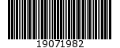
Name: Code 25 (or Code 2 of 5 or Code 25 Industrial)
Allowed characters: '0123456789'
Checksum: optional (modulo 10)
Length: variable
There are no particular options for this barcode.
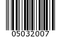
This barcode extends Zend_Barcode_Object_Code25
(Code 2 of 5), and has the same particulars and options, and adds the following:
Name: Code 2 of 5 Interleaved
Allowed characters: '0123456789'
Checksum: optional (modulo 10)
Length: variable (always even number of characters)
Available options include:
Table 16.3. Zend_Barcode_Object_Code25interleaved Options
| Option | Data Type | Default Value | Description |
|---|---|---|---|
| withBearerBars | Boolean | FALSE |
Draw a thick bar at the top and the bottom of the barcode. |
![[Note]](images/note.png) |
Note |
|---|---|
If the number of characters is not even,
|
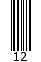
This barcode extends Zend_Barcode_Object_Ean5
(EAN 5), and has the same particulars and options, and adds the
following:
Name: EAN-2
Allowed characters: '0123456789'
Checksum: only use internally but not displayed
Length: 2 characters
There are no particular options for this barcode.
|
Note |
|---|---|
If the number of characters is lower than 2,
|
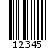
This barcode extends Zend_Barcode_Object_Ean13
(EAN 13), and has the same particulars and options, and adds the
following:
Name: EAN-5
Allowed characters: '0123456789'
Checksum: only use internally but not displayed
Length: 5 characters
There are no particular options for this barcode.
|
Note |
|---|---|
If the number of characters is lower than 5,
|
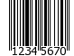
This barcode extends Zend_Barcode_Object_Ean13
(EAN 13), and has the same particulars and options, and adds the
following:
Name: EAN-8
Allowed characters: '0123456789'
Checksum: mandatory (modulo 10)
Length: 8 characters (including checksum)
There are no particular options for this barcode.
|
Note |
|---|---|
If the number of characters is lower than 8,
|
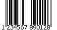
Name: EAN-13
Allowed characters: '0123456789'
Checksum: mandatory (modulo 10)
Length: 13 characters (including checksum)
There are no particular options for this barcode.
|
Note |
|---|---|
|
If the number of characters is lower than 13,
The option withQuietZones has no effect with this barcode. |
Name: Code 39
Allowed characters: '0123456789ABCDEFGHIJKLMNOPQRSTUVWXYZ -.$/+%'
Checksum: optional (modulo 43)
Length: variable
|
Note |
|---|---|
|
There are no particular options for this barcode.
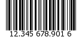
This barcode extends Zend_Barcode_Object_Code25interleaved
(Code 2 of 5 Interleaved), and inherits some of its capabilities; it also has a few
particulars of its own.
Name: Identcode (Deutsche Post Identcode)
Allowed characters: '0123456789'
Checksum: mandatory (modulo 10 different from Code25)
Length: 12 characters (including checksum)
There are no particular options for this barcode.
|
Note |
|---|---|
If the number of characters is lower than 12,
|
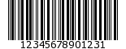
This barcode extends Zend_Barcode_Object_Code25interleaved
(Code 2 of 5 Interleaved), and inherits some of its capabilities; it also has a few
particulars of its own.
Name: ITF-14
Allowed characters: '0123456789'
Checksum: mandatory (modulo 10)
Length: 14 characters (including checksum)
There are no particular options for this barcode.
|
Note |
|---|---|
If the number of characters is lower than 14,
|
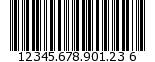
This barcode extends Zend_Barcode_Object_Identcode
(Deutsche Post Identcode), and inherits some of its capabilities; it also has a few
particulars of its own.
Name: Leitcode (Deutsche Post Leitcode)
Allowed characters: '0123456789'
Checksum: mandatory (modulo 10 different from Code25)
Length: 14 characters (including checksum)
There are no particular options for this barcode.
|
Note |
|---|---|
If the number of characters is lower than 14,
|
Name: Planet (PostaL Alpha Numeric Encoding Technique)
Allowed characters: '0123456789'
Checksum: mandatory (modulo 10)
Length: 12 or 14 characters (including checksum)
There are no particular options for this barcode.
Name: Postnet (POSTal Numeric Encoding Technique)
Allowed characters: '0123456789'
Checksum: mandatory (modulo 10)
Length: 6, 7, 10 or 12 characters (including checksum)
There are no particular options for this barcode.
Name: Royal Mail or RM4SCC (Royal Mail 4-State Customer Code)
Allowed characters: '0123456789ABCDEFGHIJKLMNOPQRSTUVWXYZ'
Checksum: mandatory
Length: variable
There are no particular options for this barcode.
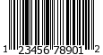
This barcode extends Zend_Barcode_Object_Ean13
(EAN-13), and inherits some of its capabilities; it also has a few
particulars of its own.
Name: UPC-A (Universal Product Code)
Allowed characters: '0123456789'
Checksum: mandatory (modulo 10)
Length: 12 characters (including checksum)
There are no particular options for this barcode.
|
Note |
|---|---|
|
If the number of characters is lower than 12,
The option withQuietZones has no effect with this barcode. |
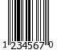
This barcode extends Zend_Barcode_Object_Upca
(UPC-A), and inherits some of its capabilities; it also has a few
particulars of its own. The first character of the text to encode
is the system (0 or 1).
Name: UPC-E (Universal Product Code)
Allowed characters: '0123456789'
Checksum: mandatory (modulo 10)
Length: 8 characters (including checksum)
There are no particular options for this barcode.
|
Note |
|---|---|
If the number of characters is lower than 8,
|
|
Note |
|---|---|
|
If the first character of the text to encode is not 0 or 1,
The option withQuietZones has no effect with this barcode. |